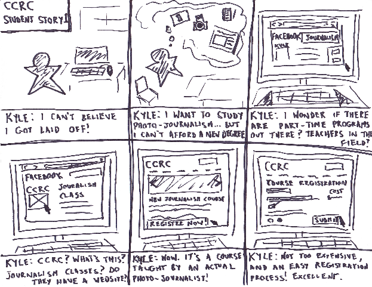

Matthew J. Smith
UX Designer
Toronto
mjs.design draft #2
CCRC
Project Overview
Duration: 6 months
Tools: dry-erase marker, paper, whiteboard, Adobe Photoshop, Adobe Illustrator, Adobe InDesign, microphone, webcam
Deliverables: research, user tests, wireframes, hi-fi mock-ups
Team Size: 4
My Own Role: UX Designer / Researcher
Time to Read: 15 minutes
0.1: Introduction
The CCRC - or, the Canadian Centre for Rural Creativity - is a non-profit school (that teaches art and tech. and business development centre in the heart of rural Ontario.
In 2015, I was hired as UX Designer and Content Strategist for the development of a website for the CCRC and its parent organization, Blyth 14/19 Inc.
The CCRC was in its nascence, and its project managers (hereafter: PMS) needed an online presence to facilitate its desired student, donor, volunteer, and events conversions.
(P.S. the project is ongoing, and the live website’s designs could be different than what’s here.)
0.2: The Challenge
The CCRC is a unique pitch: a not-for-profit school and business development centre in rural Ontario. The CCRC’s goal is to foster art, business, and tech. engagement in a rural context.
The CCRC had a website - as their parent corporation, Blyth 14/19 - which hadn’t met their conversions goals: student registrations weren’t good (despite good instructors), and neither were donations.
The CCRC is a unique pitch: it’s a not-for-profit school and business development centre in rural Ontario.
Their goals for these conversions were aggressive; like their goal to raise two million dollars in donations to fund, in part, a facilities expansion to their school in Blyth, Ontario.
The challenge was that users might not associate "rural" with tech., art, business, etc. The website would need to be persuasive... but users would need to get to the website first to be persuaded.
Website’s aren’t Field of Dreams: "if you build it, they will come". Website’s don’t engage people: people engage people (who engage people, who engage people, etc...). What the CCRC needed wasn’t just a website, but a website and social media campaign.
1.0: Strategy: The Product, Stakeholders’ Goals, Users’ Goals
Stakeholders’ goals and users’ goals for a product aren’t the same (and can even be at odds).
UX Designers need to do as much research as possible - into both sets of goals - to discover where the compatibilities are.
On the stakeholder side: what is your product, and what makes it special vs. its competitors?
In other words: why should your users care?
1.1: Stakeholder Interviews
The CCRC PMs were an accomplished group; and each had decades of rural engagement experience.
I interviewed them re: what their goals were for the CCRC.

I learned from the PMs that rural communities in Canada have experienced a significant “brain drain”, to where youth - with interest in art, business, tech., etc. - no longer felt that their dreams fit a rural context.
The PMs' hope was that the CCRC’s school, business development centre and creative events (the CCRC hosts a lot of events: concerts, theatrical performances, etc., etc.) could encourage rural engagement, and represent a usable template for others who shared their goals.

1.2: Key Performance Indicators (KPIs); Stakeholder Wants
From the stakeholder interviews, we developed initial KPIs, which would guide us through the remainder of the project:
(P.S. the stakeholders hadn’t recorded much data related to their website; these KPIs are “vs. current”, in most cases.)
- website engagement:
- # of new student registrations
- # of new donors
- # of donation dollars raised
- # of “contacts” (re: school, donations, events, volunteer, etc.)
- # of unique website visitors
- # of page views
- total time on site
- social media engagement:
- # of social media website referrals
- # of social media followers
- # of social media “Likes”, “Favorites”, etc.
- # of social media “Shares”, “Retweets”, etc.
- offline engagement:
- # of event participants (ticket sales for #s)
- # of “contacts” (re: school, donations, events, volunteer, etc.)
- # of volunteers
So: I had a good idea about what the stakeholders wanted from the product; it was time to determine what its users could want.
1.3: The Users
The CCRC’s value proposition included a school, and schools need students.
The CCRC’s classes were led by instructors with real credentials: creative professionals, active in their fields, who could get CCRC students prepared for careers.
The website’s content had to communicate the value of the CCRC’s educational options, the credentials of the instructors, etc. to its users.
The PMs envisioned their users as somewhat disparate groups: for example, a user who was attracted to the CCRC’s mission and wanted to donate, or volunteer, would not always have cross-over with students.
So: what would these users get out of a product like the CCRC?
I answered that question via user interviews; and audits of the CCRC’s existing website (as Blyth 14/19), two images of which I’ve included here:


I built surveys in Google Forms that I distributed to personal networks (with $10 Starbucks gift cards as compensation).

I received 5 responses - of the ~15 that I sent out - and of those, selected three participants who I felt represented CCRC users.
1.4: The User Interviews and Audits
I was able to perform the interviews in person. I had them test the Blyth 14/19 website (but probed for other relevant information, too). I recorded them; and from one, received consent to post it here:
The upshot of these audits was that users sought to use desktop, mobile, or a combination of the two to do the following:
- find information about the CCRC (e.g. its mission, its history, etc.)
- find information about the CCRC’s classes (i.e. class content, class instructors, class schedules, class costs, how to register for classes, etc.)
- see classes within organized groupings (e.g. "photography classes", "acting classes", etc.)
- find out more information about the CCRC’s events (what, when, where, etc.)
- see a calendar of the CCRC’s events
- see media from past events the CCRC has put on
- find information on how to get involved with the CCRC
- donate $$$ to the CCRC
- find information about the use of donated $$$ (e.g. how does a donation help?)
- access media content (e.g. pictures, videos)
- see the CCRC’s social media platforms; and connect to them
The interviews yielded some general insights as well, which I’ve compiled here:
- information gathering: to be able to view information on courses, instructors, prices, etc. simply and without a lot of digging
- to be able to register for a course entirely online
- reasons why they should attend classes at this school as opposed to others (that were potentially closer/easier to access); value proposition information, career advancement, etc.
- “youngness”, or “freshness”: the suggestion that the CCRC “meshed” with their lifestyle, or seemed new, and different; social media presence, youthful voice/aesthetic, etc.
- value: why should they donate to a specific organization vs. other organizations? What does the CCRC do differently? What is unique, or special, about it?
- legitimacy: the idea that an organization is legitimate; and that their donor dollars will be used properly
- what a dollar does: information about what their dollars will be used for; services, programs, etc.
- stability: a more conservative brand voice, aesthetic, etc.
I received 5 responses and of those, selected three participants who I felt represented CCRC users.
(P.S. there are contradictions in these insights, but user interviews don’t produce perfectly consistent results; and it’s the job of the UX Designer to prioritize, synthesize, re-test, etc.)
I developed storyboards based on the data; I’ve included one - representative of a student’s experience - here:
The Blyth 14/19 website hadn’t met these goals. Participants found it hard to navigate (navigation was non-obvious) and full of what “seemed like” superfluous information. The audit’s tasks - find the donations page, register for a course, etc. - had all been too time-intensive.
Without obvious paths into content that interested users, conversions couldn’t increase.
1.5: Return to the PMs
I brought the interviews’ results to the PMs, who confirmed that the data lined up with goals for the project.
We decided to move forward with the user insights that we had. User-agnosticism has no place in modern design; but the CCRC, as a recent organization, didn’t have a lot of data (previous students, previous donors, etc.) that could be mined for information.
1.6: User Personas
I used the data that we had - newsletter sign-ups, event participation, etc. - in tandem with our interviews data to develop user personas. I’ve included two here:


The data, in part, suggested that:
1) Users with disposable income and who supported the CCRC’s mission tended to be older: and either established, or retired; more time-rich, interested in donation, events (as a participant or as a volunteer).
2) Users with interest in classes tended to be younger, with more limited incomes and were less concerned with the CCRC’s mission; but more with who the class instructors were, and if class content could help them find jobs. These users might become “alma mater” donors, too; but it wasn’t an expectation.
User-agnosticism has no place in modern design.
2.0: Scope: The Site’s Features
I met with the PMs again to discuss which features the website needed to have (and, just as important: didn’t need to have).
I, alongside the PMs, identified our “must dos” as:
- responsive to all screen sizes
- a course registration flow, with secure payment options
- a secure donations system (the PMs wanted to use CanadaHelps.org)
- an events calendar
- a contact form for inquiries
- a newsletter, with simple registration
The PMs wanted a large hero banner at the top of the page which would showcase the CCRC's media content; with “blog posts” beneath (which would be written to funnel users into site content: courses, events, etc.
I considered Erma, and suggested that support for old browsers (IE8, IE9, etc.) would be important, too.
I developed a Functional Specifications document, a page of which I’ve included here:

There were pivots in the scope discussions. The PMs decided that (based on discussions with our web developer re: development costs) re course registration wouldn’t be automated, and would instead happen via a contact form that CCRC staff would respond to.
I suggested that a manual system - with its dearth of immediate system response (i.e. “Class is full!”, etc.) - might hurt the website’s UX. UX Designers should be the users’ best advocate; but, as costs come in to focus (in particular with not-for-profit projects), options change. You need to adapt to ensure that the project’s UX is sustained regardless.
I met with the PMs again to discuss which features the website needed to have (and, just as important: didn’t need to have).
There was, however, unanimous support for responsiveness. Based on research in 2012 from Google, 52% of users said that a poor mobile experience reduced their likelihood to engage with an organization.
The CCRC was a recent organization, and it was imperative that its website make a great first impression, regardless of a user’s device (mobile, tablet, desktop).
I had the PMs confirm the scope direction, to avoid "scope creep" (where the project tries to add more and more features as it goes forward), and moved forward with the website’s information architecture.
3.0: Structure: Feature Arrangements
I consulted with our web developer on the information architecture, which was helpful; good UX is a close collaboration between a project’s stakeholders, users, designers, and developers. You don’t design in a vacuum.
3.1: Content Audit
I started the content audit with the Blyth 14/19’s website. I used what I’d documented in the user audits (1.4) too.
The navigation was a problem: there were 7 items:
- 14/19
- Canadian Centre for Rural Creativity
- Blyth Memorial Community Hall
- The Rural Trust
- Events
- About Us
- Mailing List
There were a number of heuristic violations here: e.g., if a user hadn’t visited the site before, 4 of those 7 items (14/19, Canadian Centre for Rural Creativity, Blyth Memorial Community Hall, and The Rural Trust) would confound them and impede UX. What are these? If I select 14/19, what will happen?
If I was confused, the users would be, too; users like Erma, for whom the Internet was more of a tool than a lifestyle, would become frustrated with no clear flows.
The website’s content above the fold didn’t communicate to its users what the website was (or who its intended users were), which made the Mailing List navigation item valueless. There was a auto-scroll carousel with text-embedded media with no obvious suggestion about what the user would see on selection.
If I were a user interested in enrollment in a class, I wouldn’t have a clue as to what to do.
52% of users say that a poor mobile experience reduced their likelihood to engage with an organization (Google, 2012).
I documented content violations as I encountered them. I would use these to build the CCRC’s copy deck later on.
I met with the PMs and web developer with recommendations re: the content: omissions, additions, etc. to obtain approvals.
3.2: The Golden Thread
I developed a golden thread (a.k.a. happy path, a.k.a. journey map, a.k.a. * 100) to help the team visualize where pain points - or joys - could appear as users interfaced with the CCRC. I’ve included one of these - based on user research from 1.6 and two student personas, Samantha and Kyle - here:

3.3: Card Sort
I used the content audit to do card sorts with the participants of the user interviews, and the PMs themselves.
These were open card sorts, which means that the participants categorized the website’s content (e.g. a participant might place content from “Our Mission” into “About Us”).
I’ve included an image of the user interviews’ participants’ card sort here:

The results were useful; both groups’ participants developed clear content categories which would inform the sitemap in the project’s next phase.
3.4: Sitemap
I used the research - refined, like oil to gasoline; or an even more impressive metaphor - to build the sitemap.
It was important that contextual information integrate into the designs where it could facilitate conversions (i.e. a schedule for an event’s page) and decided to user test the inclusion of sidebars where helpful.
I replaced “The Canadian Centre for Rural Creativity” - the navigation which represented the CCRC’s courses - with “Take a Course”; which was more active language (to suggest user action).
Each individual course page would showcase information (cost, instructor’s bio, etc.) and enable registration (via form).
Research on web donation conversions suggested a ubiquitous donation button; I would test “Donate Now”, as “Support the Canadian Centre for Rural Creativity” was too large; and “Support the CCRC” was too non-descript.
I considered Erma, and what would facilitate her donation: a large, prominent button and an obvious path to learn more about the CCRC; and how their donations would be used (e.g. “About Us”).
I used the content audit to do card sorts with the participants of the user interviews, and the PMs themselves.
I presented the ideas - and then, the completed sitemap - to the PMs and received approvals. I've included the sitemap here:

4.0: Skeleton: Putting it All Together
4.1: Content; Copy Deck
The PMs and I user-tested content, voice and taxonomy (i.e. emphasize art, jobs, rural development; “courses” vs. “classes”, a youthful but confident tone, etc.) which would be used across the CCRC’s platforms.
The stakeholders and I performed term vs. term A/B tests with users, and came to conclusions which were appropriate to the CCRC’s value proposition before we got into the copy deck.
Unless your content needs to be esoteric or jargon-y (e.g. you wouldn’t expect a website called “How to Build a Real, Actual Spaceship” to be uncomplicated), it shouldn’t be. As the CCRC was a general website, I would write its copy deck with general language.
The PMs and I user-tested content, voice and taxonomy.
I completed the copy deck - which represented the website’s written content - at fourteen pages.
4.2: Wireframes
I like to start to writeframe on a whiteboard - or paper - and do iterations of these before I move to digital representations (in AxureRP, Photoshop, etc.). I can get more honest opinions on these from users (and stakeholders) who might be more reluctant to critique a design that appears to be finished.
I’ve included one - of the several of these - here:

I received approvals on these and moved on to create lo-fi representations (in Photoshop) and have included two of those (for the desktop and mobile landing page) here:


4.3: Wireframe Test
I tested these wireframes with the PMs, the research group, and others close to the CCRC.
These tests led to these edits: move the social media buttons beneath the hero - to not overwhelm the screen with CTAs, compete with the donate button, etc. and the addition of a “Home” item to the navigation. While brand-as-home-button is convention, we found that a lot of users - like Erma - understand a “Home” button more.
These designs represented a shift from the Blyth 14/19 website to a more streamlined user experience, with information organized to facilitate user and stakeholder goals.
5.0: Surface: The Visuals
5.1: A Brand
The PMs hired a talented graphic designer to give the designs style.
Together, we selected fonts and colours to test:
Fonts: Baufra for headers, and Nimbus Sans for content; two sans-serif fonts; but with sufficient contrast.
Colours: rural-inspired selections of blue (HEX: #4BA5DC), green-yellow (#D0DE46) and green (#82C457).
The team wanted the graphic design to reflect the content and the CCRC’s rural context (which was thought to represent a unique line of user engagement). The brand went through several tests before we arrived - thanks to our graphic designer - at our logo:
5.2: Website Visuals
The team and I did a bunch of iterations of the visual designs - a ton of time in Photoshop - and met with the PMs throughout to test them.
I’ve included the navigation and hero banner (of what we gave to our developer) here:

6.0: Prompts: "If You Build It..."; Social Media
With the designs “finished” (because designs aren’t ever finished), the PMs and I got into social media content.
The CCRC - and Blyth 14/19 - had a ton of rich media content - image, audio and video content - from its events; but it hadn’t been leveraged on social media, and was difficult to find on their website.
I attended one of these events - to research the “real life user experience” (read: to eat and have fun) where the PMs had shut down Blyth’s main street with live bands and a local farm-catered feast. The entire event was recorded - image and video - and there were hundreds of people in attendance.

It was fun. It was memorable. It was good food, good drinks, and good entertainment in a beautiful place… but, later, when I tried to find a video of it for a friend, I couldn’t. It hadn’t been shared (outside of the Blyth 14/19’s website).
The online marketing publication iMedia Connection said (in 2013) that 60% of users’ experience with a brand improves after consuming associated media.
The CCRC didn’t have Instagram, Pinterest, YouTube, etc. accounts to leverage its media content. What should’ve been the organization’s main drivers to website conversions hadn’t been.
I outlined imperative social media goals for the PMs in 2016: expand Twitter, Facebook and LinkedIn; and create accounts for Instagram, Pinterest, YouTube, Vine, Google+, etc.
6.1: AdWords
I created SEO guidelines for the CCRC; which included keyword AdWords keyword research. I’ve included a page of these here:

SEO is one of the more obvious drivers to web conversions. I consider SEO to be an important part of the design process because where, when, etc. an ad is shown can contribute to the continuum of users’ experience of your product, or brand.
7.0: Outcomes
The project hasn’t finished; but I will update here when I have useful data re: its outcome.
8.0: What I Learned (Thus Far)
Designs for disparate user groups (and red routes) is an information architecture challenge. What aspects of the product get the most emphasis? How are the flows mapped? The best answers to these questions will always come from user tests. Test early, and test often.
It’s best to involve the entire team throughout a product’s development. Web developers, graphic designers, etc. should be a part of critical project decisions from the jump. e.g. what a designer could want and what a developer could create might not be compatible; and it’s good to find these gaps in order to avoid pivots in scope, structure, etc.
UX is about user involvement; but team involvement is critical too.